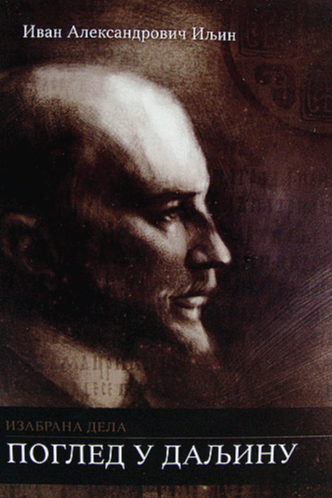

„Поглед у даљину“ од Ивана Иљина представља дубоко промишљање о судбини човека, народа и цивилизације у временима духовне кризе и историјских ломова.
Са јасном визијом и снажним моралним ставом, Иљин анализира унутрашње стање друштва и указује на опасности губитка духовних вредности, националног идентитета
и истинске слободе.
Кроз низ есеја и филозофских разматрања, аутор позива читаоца да напусти површно посматрање стварности и усмери свој „поглед у даљину“ - ка дубљем разумевању
историјских процеса, моралне одговорности и духовне обнове. Његово дело није само анализа савременог света, већ и позив на личну и колективну будност, на повратак
унутрашњој дисциплини, вери и вишим идеалима.
Попут пророчког гласа, Иљин упозорава на последице духовног расула и идеолошких заблуда, али истовремено указује на пут изласка -
кроз обнову духа, јачање карактера и повратак темељним вредностима. „Поглед у даљину“ је књига која изазива читаоца да преиспита сопствене ставове и да сагледа
стварност из шире, дубље и одговорније перспективе.